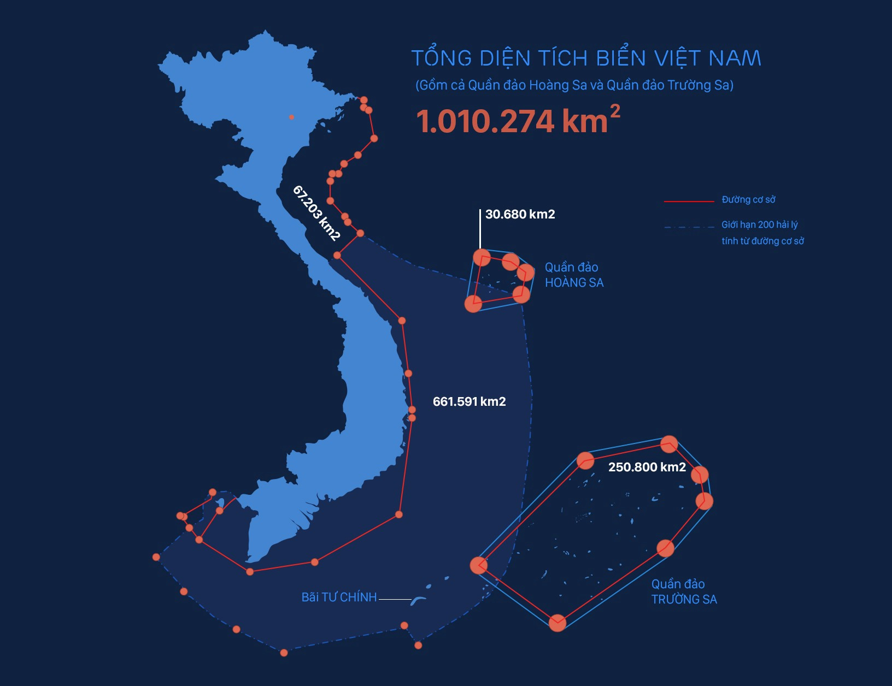

Bản đồ quốc gia: Việt Nam
Việt Nam và bản đồ Thế Giới
Việt Nam
Châu ÁCộng hòa Xã hội chủ nghĩa Việt Nam
Việt Nam, tên gọi chính thức là Cộng hòa Xã hội chủ nghĩa Việt Nam, là một quốc gia nằm ở cực Đông của bán đảo Đông Dương thuộc khu vực Đông Nam Á, giáp với Lào, Campuchia, Trung Quốc, biển Đông và vịnh Thái Lan.
Lãnh thổ Việt Nam xuất hiện con người sinh sống từ thời đại đồ đá cũ, khởi đầu với các nhà nước Văn Lang, Âu Lạc. Âu Lạc bị nhà Triệu ở phương Bắc thôn tính vào đầu thế kỷ thứ 2 TCN sau đó là thời kỳ Bắc thuộc kéo dài hơn một thiên niên kỷ. Chế độ quân chủ độc lập được tái lập sau chiến thắng của Ngô Quyền trước nhà Nam Hán. Sự kiện này mở đường cho các triều đại độc lập kế tục và Việt Nam sau đó nhiều lần chiến thắng trước các cuộc chiến tranh xâm lược từ phương Bắc cũng như dần mở rộng về phía nam. Thời kỳ Bắc thuộc cuối cùng kết thúc sau chiến thắng trước nhà Minh của nghĩa quân Lam Sơn.
Đến thời kỳ cận đại, Việt Nam lần lượt trải qua các giai đoạn Pháp thuộc và Nhật thuộc. Sau khi Nhật Bản đầu hàng Đồng Minh, các cường quốc thắng trận tạo điều kiện cho Pháp thu hồi Liên bang Đông Dương. Kết thúc Thế chiến 2, Việt Nam chịu sự can thiệp trên danh nghĩa giải giáp quân đội Nhật Bản của các nước Đồng Minh bao gồm Anh, Pháp (miền Nam), Trung Hoa Dân Quốc (miền Bắc). Nhà nước Việt Nam Dân chủ Cộng hòa do Mặt trận Việt Minh lãnh đạo ra đời khi Hồ Chí Minh tuyên bố độc lập vào ngày 2 tháng 9 năm 1945 sau thành công của Cách mạng Tháng Tám và chiến thắng Liên hiệp Pháp cùng Quốc gia Việt Nam do Pháp hậu thuẫn trong Chiến tranh Đông Dương lần thứ nhất. Sự kiện này dẫn tới việc Hiệp định Genève (1954) được ký kết và Việt Nam bị chia cắt thành hai vùng tập kết quân sự, lấy ranh giới là vĩ tuyến 17. Việt Nam Dân chủ Cộng hoà kiểm soát phần phía Bắc còn phía Nam do Việt Nam Cộng hoà (nhà nước kế tục Quốc gia Việt Nam) kiểm soát và được Hoa Kỳ ủng hộ. Xung đột về vấn đề thống nhất lãnh thổ đã dẫn tới Chiến tranh Việt Nam với sự can thiệp của nhiều nước và kết thúc với chiến thắng của Việt Nam Dân chủ Cộng hòa, Mặt trận Dân tộc Giải phóng Miền Nam Việt Nam cùng sự sụp đổ của Việt Nam Cộng hoà vào năm 1975. Chủ quyền phần phía Nam được chính quyền Cộng hoà miền Nam Việt Nam (do Mặt trận Dân tộc Giải phóng Miền Nam Việt Nam thành lập) giành quyền kiểm soát. Năm 1976, Việt Nam Dân chủ Cộng hòa và Cộng hoà miền Nam Việt Nam thống nhất thành Cộng hòa Xã hội chủ nghĩa Việt Nam.
Sau khi thống nhất, Việt Nam tiếp tục gặp khó khăn do sự sụp đổ và tan rã của đồng minh Liên Xô cùng Khối phía Đông, các lệnh cấm vận của Hoa Kỳ,[12] chiến tranh với Campuchia, biên giới giáp Trung Quốc và hậu quả của chính sách bao cấp sau nhiều năm áp dụng. Năm 1986, Đảng Cộng sản ban hành cải cách đổi mới, tạo điều kiện hình thành kinh tế thị trường và hội nhập sâu rộng. Cải cách đổi mới kết hợp cùng quy mô dân số lớn đưa Việt Nam trở thành một trong những nước đang phát triển có tốc độ tăng trưởng thuộc nhóm nhanh nhất thế giới và được coi là Hổ mới châu Á. Tuy nhiên, quốc gia này vẫn phải đối mặt với những thách thức như tham nhũng,[13] tội phạm gia tăng,[14] ô nhiễm môi trường[15] và phúc lợi xã hội chưa đầy đủ.[16] Ngoài ra, giới bất đồng chính kiến, chính phủ một số nước phương Tây và các tổ chức theo dõi nhân quyền có quan điểm chỉ trích hồ sơ nhân quyền của Việt Nam liên quan đến các vấn đề tôn giáo, kiểm duyệt truyền thông, hạn chế hoạt động ủng hộ nhân quyền cùng các quyền tự do dân sự.
Nguồn gốc tên gọi
Các nhà nước trong lịch sử Việt Nam có những quốc hiệu khác nhau như Xích Quỷ, Văn Lang, Đại Việt, Đại Nam hay Việt Nam. Chữ Việt Nam (越南) được cho là việc đổi ngược lại của quốc hiệu Nam Việt (南越) từ trước Công nguyên. Chữ "Việt" 越 đặt ở đầu biểu thị đất Việt Thường, cương vực cũ của nước này, từng được dùng trong các quốc hiệu Đại Cồ Việt (大瞿越) và Đại Việt (大越), là các quốc hiệu từ thế kỷ 10 tới đầu thế kỷ 19. Chữ "Nam" 南 đặt ở cuối thể hiện đây là vùng đất phía nam, là vị trí cương vực, từng được dùng cho quốc hiệu Đại Nam (大南), và trước đó là một cách gọi phân biệt Đại Việt là Nam Quốc (như "Nam Quốc Sơn Hà") với Bắc Quốc là Trung Hoa.
Vua Gia Long nhà Nguyễn chính thức sử dụng quốc hiệu "Việt Nam" từ năm 1804.[18] Sau đó Nhà Thanh công nhận Việt Nam là quốc hiệu của Nhà Nguyễn.[19] Đặt quốc hiệu là "Việt Nam" không nhầm với nước Nam Việt và thể hiện vị trí địa lý nằm ở phía nam Bách Việt. Trùng hợp là trước đó mấy trăm năm, trong Sấm Trạng Trình Nguyễn Bỉnh Khiêm đã dùng tên "Việt Nam" làm tên chính thức, mặc dù khi đó vẫn còn sử dụng quốc hiệu "Đại Việt". Năm 1804, vua Thanh cho án sát sứ Quảng Tây Tề Bố Sâm sang tuyên phong Gia Long làm "Việt Nam quốc vương" 越南國王 mặc dù các vua Nhà Nguyễn vẫn theo lệ cũ tự phong "Hoàng đế" 皇帝 cho ngang hàng với vua Trung Quốc.
Tên gọi "Việt Nam" cũng xuất hiện trong tác phẩm Việt Nam vong quốc sử của Phan Bội Châu năm 1905 và trong tên gọi Việt Nam Quốc dân Đảng.[21] Tên gọi "An Nam" cũng có trong thời Pháp thuộc. Năm 1945, Đế quốc Việt Nam ra đời và tiếp tục đặt quốc hiệu "Việt Nam".[22] Sau đó tất cả những nhà nước ở Việt Nam sau năm 1945 đều sử dụng quốc hiệu này.
Trong văn viết tiếng nước ngoài
Trong văn viết tiếng Anh hiện nay, cách viết tiêu chuẩn và thông dụng nhất cho tên gọi Việt Nam là Vietnam (viết liền không dấu cách), dẫn đến tính từ là Vietnamese. Tại Việt Nam vẫn còn tồn tại hai cách viết vẫn giữ dấu cách là "Viet Nam" (bỏ dấu) và "Việt Nam" (để đầy đủ dấu theo chữ Quốc ngữ). Điều này có thể nhận thấy trên website của Chính phủ Việt Nam và Bộ Ngoại giao Việt Nam cho phiên bản tiếng Anh trước đây có dùng cả 3 cách: "Vietnam", "Viet Nam" hoặc "Việt Nam".[23][24] Danh sách liệt kê thành viên trên website Liên Hợp Quốc viết tên quốc gia này là "Viet Nam" trong khi các bài viết tiểu mục thì vẫn viết là "Vietnam". Hiện Bộ Ngoại giao Việt Nam và Tổ chức tiêu chuẩn hóa quốc tế (ISO) công nhận "Viet Nam" và quốc hiệu "the Socialist Republic of Viet Nam" là tên gọi chính xác, được chuẩn hóa của Việt Nam trên các văn bản tiếng nước ngoài, chủ yếu trên các văn bản và văn hóa phẩm tiếng Anh được phát hành bởi Nhà nước Việt Nam.[25][26] Dù trước đây, như đã kể trên, vấn đề tên gọi thống nhất cho Việt Nam đã chưa được coi trọng, hiện tại thì các website chính thức của Chính phủ Việt Nam đã gần như hoàn toàn sử dụng tên gọi đã chuẩn hóa là "Viet Nam", hạn chế tối đa việc sử dụng các dị bản như "Vietnam".
Tuy nhiên Từ điển tiếng Anh Oxford chỉ ghi nhận cách viết Vietnam cho danh từ và Vietnamese cho tính từ,[29][30] không có ghi nhận "Viet Nam" và "Viet Namese".[31][32][b] Hầu hết ngôn ngữ dùng chữ Latinh như tiếng Tây Ban Nha, tiếng Đức, tiếng Ý... cũng sử dụng cách viết "Vietnam", và một số ngôn ngữ có cách viết khác như "Vietnã" (tiếng Bồ Đào Nha), "Wietnam" (tiếng Ba Lan), "Vítneam" (tiếng Ireland), tuỳ vào cấu trúc bảng chữ cái Latinh của mỗi ngôn ngữ nhưng đều viết liền không dấu cách. Các ngôn ngữ khác dùng những hệ chữ viết có họ hàng gần với chữ Latinh như chữ Cyrill hay chữ Hy Lạp cũng viết liền không dấu cách để chỉ Việt Nam như "Вьетнам" (tiếng Nga), "Вијетнам" (tiếng Serbia), "Βιετνάμ" (tiếng Hy Lạp)
Địa lý
Việt Nam có diện tích 331.212 km², đường biên giới trên đất liền dài 4.639 km, đường bờ biển trải dài 3.260 km, có chung đường biên giới trên biển với Thái Lan qua vịnh Thái Lan và với Trung Quốc, Philippines, Indonesia, Brunei, Malaysia qua Biển Đông. Việt Nam tuyên bố chủ quyền đối với hai thực thể địa lý tranh chấp trên Biển Đông là các quần đảo Hoàng Sa (bị mất kiểm soát trên thực tế) và Trường Sa (kiểm soát một phần).
Khoảng cách giữa cực Bắc và cực Nam của Việt Nam theo đường chim bay là 1.650 km. Nơi có chiều ngang hẹp nhất ở Quảng Bình với chưa đầy 50 km. Đường biên giới đất liền dài hơn 4.600 km, trong đó, biên giới với Lào dài nhất (gần 2.100 km), tiếp đến là Trung Quốc và Campuchia. Tổng diện tích là 331.212 km² gồm toàn bộ phần đất liền và hải đảo[35] cùng hơn 4.000 hòn đảo, bãi đá ngầm và cả hai quần đảo trên Biển Đông là Trường Sa (thuộc tỉnh Khánh Hòa) và Hoàng Sa (thuộc thành phố Đà Nẵng) mà nhà nước tuyên bố chủ quyền.
Địa hình Việt Nam có núi rừng chiếm khoảng 40%, đồi 40% và độ che phủ khoảng 75% diện tích đất nước. Có các dãy núi và cao nguyên như dãy Hoàng Liên Sơn, cao nguyên Sơn La ở phía bắc, dãy Bạch Mã và các cao nguyên theo dãy Trường Sơn ở phía nam. Mạng lưới sông, hồ ở vùng đồng bằng châu thổ hoặc miền núi phía Bắc và Tây Nguyên. Đồng bằng chiếm khoảng 1/4 diện tích, gồm các đồng bằng châu thổ như đồng bằng sông Hồng, sông Cửu Long và các vùng đồng bằng ven biển miền Trung, là vùng tập trung dân cư. Đất canh tác chiếm 17% tổng diện tích đất Việt Nam.
Đất chủ yếu là đất ferralit vùng đồi núi (ở Tây Nguyên hình thành trên đá bazan) và đất phù sa đồng bằng. Ven biển đồng bằng sông Hồng và sông Cửu Long tập trung đất phèn. Rừng ở Việt Nam chủ yếu là rừng rậm nhiệt đới khu vực đồi núi còn vùng đất thấp ven biển có rừng ngập mặn. Đất liền có các mỏ khoáng sản như phosphat, vàng. Than đá có nhiều nhất ở Quảng Ninh. Sắt ở Thái Nguyên, Hà Tĩnh. Ở biển có các mỏ dầu và khí tự nhiên.
Việt Nam có khí hậu nhiệt đới gió mùa, thời tiết có sự biến động. Phía bắc dãy Bạch Mã có 2 mùa gió chính: gió mùa Đông Bắc lạnh và khô vào mùa đông tạo nên mùa đông lạnh; gió Tây Nam nóng khô và Đông Nam ẩm ướt vào mùa hè. Phía nam có gió Đông Bắc vào mùa khô và gió Tây Nam vào mùa mưa. Các dòng biển phần nào đó điều hòa khí hậu. Độ ẩm tương đối trung bình là 84% suốt năm. Việt Nam trải qua các đợt lụt và bão, có lượng mưa từ 1.200 đến 3.000 mm, số giờ nắng khoảng 1.500 đến 3.000 giờ/năm và nhiệt độ từ 5 °C đến 37 °C. Nhiệt độ trung bình năm tăng khoảng 0,5 độ Celsius trong vòng 50 năm (1964–2014).
Sinh thái
Việt Nam nằm trong vùng sinh thái Indomalaya. Theo Báo cáo tình trạng môi trường quốc gia năm 2005, Việt Nam nằm trong 25 quốc gia có mức độ đa dạng sinh học cao, xếp thứ 16 trên toàn thế giới về đa dạng sinh học và là nơi sinh sống của khoảng 16% các loài trên thế giới. 15.986 loài thực vật đã thấy trong cả nước, trong đó 10% là loài đặc hữu, Việt Nam có 307 loài giun tròn, 200 loài oligochaeta, 145 loài acarina, 113 loài bọ đuôi bật, 7.750 loài côn trùng, 260 loài bò sát, 120 loài lưỡng cư, 840 loài chim và 310 loài động vật có vú, trong đó có 100 loài chim và 78 loài động vật có vú là loài đặc hữu. Ngoài ra còn có 1.438 loài tảo nước ngọt, chiếm 9,6% tổng số loài tảo, cũng như 794 loài thủy sinh không xương sống và 2,458 loài cá biển. Cuối những năm 1980, một quần thể Tê giác Java đã bị phát hiện ở Vườn Quốc gia Cát Tiên và có thể cá thể cuối cùng của loài này ở Việt Nam đã chết vào năm 2010.
Ngân hàng gen quốc gia Việt Nam bảo tồn 12.300 giống của 115 loài. Chính phủ Việt Nam đã chi 497 triệu đô la Mỹ để duy trì đa dạng sinh học trong năm 2004 và đã thiết lập 126 khu bảo tồn trong đó có 28 vườn quốc gia. Việt Nam có 2 di sản thiên nhiên thế giới là Vịnh Hạ Long và Vườn quốc gia Phong Nha ‒ Kẻ Bàng cùng 6 khu dự trữ sinh quyển bao gồm Rừng ngập mặn Cần Giờ, Cát Tiên, Cát Bà, Kiên Giang, Đồng bằng sông Hồng và Tây Nghệ An.
Hành chính
Phân cấp hành chính Việt Nam gồm 3 cấp: cấp tỉnh và tương đương, cấp huyện và tương đương, cấp xã và tương đương. Thủ đô của Việt Nam là thành phố Hà Nội, thành phố đông dân cũng như có quy mô GRDP lớn nhất là Thành phố Hồ Chí Minh (ngày nay vẫn thường được gọi phổ biến với tên cũ là Sài Gòn).[37] Tổng cộng có 63 đơn vị hành chính cấp tỉnh và tương đương gồm 58 tỉnh và 5 thành phố trực thuộc trung ương (*) với thủ đô là Hà Nội. Dưới cấp tỉnh và thành phố trực thuộc trung ương là cấp quận, huyện, thị xã và thành phố thuộc tỉnh (gọi chung là cấp huyện). Tính đến tháng 1 năm 2021, Việt Nam có 705 đơn vị cấp quận/huyện/thị xã/thành phố thuộc tỉnh/thành phố thuộc thành phố trực thuộc trung ương.
Dưới cấp quận/huyện/thị xã/thành phố thuộc tỉnh là các đơn vị hành chính phường, xã, thị trấn (gọi chung là cấp xã). Dưới cấp phường/xã/thị trấn là các khu vực không chính thức với tên gọi khác nhau như khu phố, tổ dân phố, làng, thôn, ấp, khóm, buôn, bản, xóm...
Lịch sử
Các nhà khảo cổ học tìm thấy những dấu vết của người đứng thẳng thời đồ đá cũ trên lãnh thổ Việt Nam cách đây khoảng 500.000 năm; các công cụ thô sơ bằng đá và các dấu răng của người tiền sử bị phát hiện tại các tỉnh Lạng Sơn, Thanh Hóa, Yên Bái, Ninh Bình và Quảng Bình.[38] Ngoài ra, tại các vùng phía Bắc, con người sinh sống trong các hang động đá vôi và sống bằng các hoạt động săn thú, hái lượm. Trong khi đó, tại các vùng duyên hải miền Trung như Nghệ An, con người chủ yếu sống bằng đánh cá.
Đến thời đại đồ đá mới cách đây 5000 đến 6000 năm, người Việt cổ bắt đầu biết canh tác lúa nước; loạt dấu vết trồng lúa có từ cao nguyên tới đồng bằng.[38] Ngoài ra, con người bắt đầu biết chế tác công cụ theo kiểu khác và làm đồ gốm với kỹ thuật khác.[38] Đến khoảng thiên niên kỷ I TCN vào cuối thời kỳ đồ đồng, khu vực lúa nước ở sông Hồng và sông Cả phát triển thành nền văn hóa Đông Sơn[39] rồi cùng thời gian đó, những nhà nước đầu tiên lần lượt xuất hiện đó là Văn Lang và Âu Lạc.
Từ thế kỷ II TCN, các triều đại phong kiến từ phương Bắc cai trị một phần Việt Nam hơn 1000 năm.[41] Sự cai trị này bị ngắt quãng bởi những cuộc khởi nghĩa của những tướng lĩnh như Bà Triệu, Mai Thúc Loan, Hai Bà Trưng hay Lý Bí. Năm 905, Khúc Thừa Dụ giành quyền tự chủ, không phải là độc lập vì Dụ tự nhận mình là quan triều đình phương Bắc.[42] Đến năm 938, sau khi chỉ huy trận sông Bạch Đằng đánh bại quân Nam Hán,[43] Ngô Quyền lập triều xưng vương, đánh dấu một nhà nước độc lập khỏi các triều đình phương Bắc vào năm 939.
Sau nhà Ngô, lần lượt các triều Đinh, Tiền Lê, Lý và Trần tổ chức chính quyền tương tự các triều đại Trung Hoa, lấy Phật giáo làm tôn giáo chính của quốc gia và cho truyền bá cả Nho giáo và Đạo giáo. Nhà Tiền Lê, Lý và Trần đã chống trả các cuộc tấn công của nhà Tống và nhà Mông – Nguyên, đều thắng lợi và bảo vệ được Đại Việt. Năm 1400, Hồ Quý Ly cướp ngôi nhà Trần, lập nhà Hồ, đổi tên nước là Đại Ngu, tiến hành cải cách. Năm 1407, Đại Ngu bị Nhà Minh thôn tính. một số thành viên hoàng tộc nhà Trần khởi nghĩa, lập nhà Hậu Trần và bị quân Minh đánh bại sau 7 năm. Năm 1427, Lê Lợi đánh đuổi quân Minh, lập nhà Hậu Lê, giành lại độc lập (năm 1428). Có quan điểm cho rằng đây là triều đại mà phong kiến Việt Nam đạt "đỉnh cao" đặc biệt là đời vua Lê Thánh Tông (1460–1497).
Vào đầu thế kỷ XVI, Nhà Lê sơ bị Nhà Mạc cướp ngôi nên một bộ phận quan lại trung thành đã lập người khác trong dòng dõi vua Lê lên làm vua, tái lập Nhà Lê. Nhà Lê trung hưng sau 60 năm giao tranh đã chiến thắng, diệt Nhà Mạc. Vua Lê khi đó là bù nhìn, hai tập đoàn phong kiến Chúa Trịnh và Chúa Nguyễn tranh chấp nhau, gây chiến tranh kéo dài hơn 100 năm, chia cắt Đại Việt thành đàng Ngoài và đàng Trong trong 200 năm. Cuối thế kỷ XVIII, tướng khởi nghĩa Nguyễn Huệ trong 15 năm đã đánh bại cả Chúa Trịnh và Chúa Nguyễn cùng các cuộc xâm chiếm của Xiêm và Thanh để lập Nhà Tây Sơn. Nguyễn Huệ mất, với người kế vị Cảnh Thịnh, nhà Tây Sơn bị Nguyễn Ánh – một thành viên dòng họ Chúa Nguyễn cùng với viện trợ từ Pháp và Xiêm lật đổ, lập Nhà Nguyễn, triều đại cuối cùng ở Việt Nam.[45] Thời phong kiến, các triều Lý, Trần, Hậu Lê và chúa Nguyễn thu phục Chiêm Thành, Chân Lạp và Tây Nguyên ở phía Nam.
Phương Tây tiếp cận Việt Nam từ thế kỷ XVI. Vào thế kỷ XVII, Đàng Trong và Đàng Ngoài trao đổi thương mại trước hết với Bồ Đào Nha và Hà Lan,[47] sau thêm Anh và Pháp. Các tu sĩ Dòng Tên do Bồ Đào Nha bảo trợ[48] đến truyền bá Công giáo từ năm 1615 rồi Hội Thừa sai Paris và Dòng Đa Minh tiếp nối. Công giáo tại Việt Nam phát triển trong 2 thế kỷ tiên khởi XVII và XVIII.[49] Từ thời Gia Long, Nhà Nguyễn bế quan tỏa cảng, cấm ngoại thương, không tiếp xúc công nghệ tiên tiến. Nửa sau thế kỷ 19, Pháp xâm lược bán đảo Đông Dương, thâu tóm nhà Nguyễn và thành lập Liên bang Đông Dương năm 1887. Thời Pháp thuộc, văn hóa, khoa học, kỹ thuật phương Tây được tăng cường truyền bá.
Thế chiến thứ 2, Nhật đảo chính Pháp ở Đông Dương, dựng nên Đế quốc Việt Nam, chính thể không thực quyền phải nộp thuế và cung ứng Nhật tài nguyên có lúa gạo, góp phần gây nạn đói Ất Dậu. Sau khi Nhật đầu hàng Đồng Minh, Hồ Chí Minh lãnh đạo Việt Minh giành chính quyền, đọc Tuyên ngôn Độc lập thành lập Việt Nam Dân chủ Cộng hòa ngày 2 tháng 9 năm 1945.[51] Pháp tính lấy lại Đông Dương, nhưng vấp phải sự phản kháng của Việt Nam Dân chủ Cộng hòa nên đã buộc phải hậu thuẫn lập Quốc gia Việt Nam do Bảo Đại, cựu hoàng đế Nhà Nguyễn làm Quốc trưởng.
Năm 1954, Chiến tranh Đông Dương kết thúc, Pháp phải công nhận sự độc lập của Việt Nam và rút quân, xuất hiện 2 vùng tập kết quân sự chờ cuộc bầu cử thống nhất đất nước[53] nhưng không thành do Hoa Kỳ hậu thuẫn cho Việt Nam Cộng hòa (chính phủ kế thừa Quốc gia Việt Nam) từ chối tổ chức bầu cử.[54] Nhà nước xã hội chủ nghĩa Việt Nam Dân chủ Cộng hòa hậu thuẫn các lực lượng miền Nam nổi dậy chống Chính phủ Việt Nam Cộng hòa, gây ra xung đột quân sự mà tiếp theo đó là sự tham chiến của quân đội Hoa Kỳ và đồng minh.[55] Chiến tranh kết thúc vào ngày 30 tháng 4 năm 1975 khi Tổng thống Việt Nam Cộng hòa tuyên bố đầu hàng.
Năm 1976, Cộng hòa Miền Nam Việt Nam và Việt Nam Dân chủ Cộng hòa tổ chức tuyển cử hợp nhất. Do hậu quả chiến tranh, rồi chiến tranh biên giới phía Bắc, chiến tranh biên giới Tây Nam, chính sách bao cấp và bị Hoa Kỳ cấm vận, nước Việt Nam thời hậu chiến phải đối mặt với các vấn đề nghiêm trọng trong lĩnh vực kinh tế-xã hội.[57] Năm 1986, Đại hội Đảng lần VI chấp thuận Đổi mới, cải tổ nhà nước và chuyển nền kinh tế theo hướng mới.[58] Việt Nam bình thường hóa quan hệ với Hoa Kỳ năm 1995 và gia nhập ASEAN vào cùng năm. Năm 2007, Việt Nam gia nhập tổ chức kinh tế thế giới WTO.
Chính trị
Việt Nam theo chế độ xã hội chủ nghĩa với cơ chế có duy nhất một đảng chính trị lãnh đạo là Đảng Cộng sản Việt Nam. Vào năm 2016, các đại biểu là Đảng viên trong Quốc hội có tỉ lệ là 95,8%,[59] những người đứng đầu Chính phủ, các Bộ và Quốc hội cũng như các cơ quan tư pháp đều là Đảng viên và do Ban Chấp hành Trung ương hoặc Bộ Chính trị đề cử.
Đảng Cộng sản Việt Nam, đứng đầu bởi Tổng Bí thư, là Đảng duy nhất lãnh đạo trên chính trường Việt Nam, cam kết với các nguyên tắc của Lênin "tập trung dân chủ" và không cho phép đa đảng.[60] Thường trực Ban Bí thư, có nhiệm vụ phụ trách, chủ trì công việc hàng ngày của Ban Bí thư.
Chủ tịch nước là nguyên thủ quốc gia, có các quyền trong đó: Công bố hiến pháp, luật, pháp lệnh; Tổng Tư lệnh vũ trang; đề nghị Quốc hội bầu, miễn nhiệm Thủ tướng, Chánh án Tòa án nhân dân tối cao, Viện trưởng Viện kiểm sát nhân dân tối cao,... thay mặt Nhà nước về đối nội và đối ngoại.
Quốc hội nhiệm kỳ 5 năm, đứng đầu là Chủ tịch Quốc hội, theo Hiến pháp là cơ quan đại biểu cao nhất của nhân dân. Duy nhất Quốc hội có quyền lập hiến, lập pháp với nhiệm vụ giám sát, quyết định những chính sách cơ bản, những nguyên tắc của bộ máy Nhà nước và quan hệ xã hội công dân. Quốc hội không độc lập và tuân thủ đa số các quy định từ Đảng nhưng sau Đổi mới, vai trò của Quốc hội đẩy lên cao hơn.
Chính phủ là cơ quan chấp hành của Quốc hội, cơ quan hành chính cao nhất, gồm Thủ tướng, các Phó Thủ tướng, các Bộ trưởng và Thủ trưởng cơ quan ngang Bộ.
Bốn chức danh Tổng Bí thư, Chủ tịch nước, Thủ tướng và Chủ tịch Quốc hội được gọi là các lãnh đạo chủ chốt của Đảng và Nhà nước Việt Nam (phải là Ủy viên Bộ Chính trị trọn một nhiệm kỳ trở lên, trường hợp đặc biệt do Ban Chấp hành Trung ương hoặc Bộ Chính trị quyết định).
Tòa án nhân dân tối cao là cơ quan xét xử. Ngoài ra, Tòa án quân sự có thẩm quyền đặc biệt trong các vấn đề an ninh quốc gia. Viện kiểm sát nhân dân tối cao là cơ quan giữ quyền công tố và kiểm sát hoạt động tư pháp cao nhất Việt Nam.
Lực lượng vũ trang nhân dân Việt Nam bao gồm Quân đội nhân dân Việt Nam, Công an nhân dân Việt Nam và Dân quân tự vệ. Quân đội nhân dân Việt Nam (VPA) là tên chính thức cho tổ chức quân sự hoạt động ở Việt Nam, chia thành:
- Quân chủng Lục quân: không tổ chức Bộ tư lệnh riêng như Hải quân, Phòng không – Không quân và Cảnh sát biển mà các quân đoàn chủ lực và binh chủng do Bộ Tổng tham mưu trực tiếp chỉ đạo.
- Quân chủng Hải quân: thành lập năm 1955, xây dựng trên cơ sở Cục Phòng thủ Bờ biển.
- Quân chủng Phòng không – Không quân: hợp nhất từ hai quân chủng Phòng không và Không quân từ năm 2000.
- Lực lượng Bộ đội Biên phòng: thành lập năm 1958
- Lực lượng Cảnh sát biển: thành lập năm 1998
- Lực lượng Tác chiến Không gian mạng: thành lập năm 2017
- Lực lượng Bảo vệ Lăng Chủ tịch Hồ Chí Minh: thành lập năm 1976
VPA có số lượng khoảng 450.000 người, còn tổng lực lượng, bao gồm cả bán quân sự và dân quân tự vệ, có thể lên khoảng 5.000.000 người. Năm 2010, chi phí đầu tư quân sự ở Việt Nam khoảng 2,48 tỷ USD, tương đương khoảng 2,5% GDP năm 2010.
Ngoại giao
Tính đến năm 2020, Việt Nam đã thiết lập quan hệ ngoại giao với 189 quốc gia[61] và là thành viên của nhiều tổ chức quốc tế, trong đó nổi bật như: Liên Hợp Quốc, Hiệp hội các quốc gia Đông Nam Á (ASEAN), Diễn đàn Hợp tác Kinh tế Châu Á – Thái Bình Dương (APEC) và Tổ chức Thương mại Thế giới (WTO).
Theo các văn kiện Đại hội đại biểu toàn quốc lần thứ X: Cộng hòa Xã hội chủ nghĩa Việt Nam chủ trương đường lối đối ngoại độc lập, tự chủ, rộng mở, đa dạng, đa phương hóa quan hệ quốc tế, chủ động hội nhập quốc tế với phương châm "Việt Nam sẵn sàng là bạn và là đối tác tin cậy của tất cả các nước phấn đấu vì hòa bình, độc lập và phát triển".
Việt Nam gia nhập Liên Hợp Quốc vào năm 1977, sau đổi mới, bình thường hóa quan hệ với Trung Quốc vào năm 1992 và với Hoa Kỳ vào năm 1995, gia nhập khối ASEAN năm 1995. Hiện đã thiết lập quan hệ ngoại giao với 189 quốc gia (gồm 43 nước châu Á, 47 nước châu Âu, 14 nước châu Đại Dương, 30 nước châu Mỹ và 55 nước châu Phi).[62] Việt Nam cũng là thành viên của 63 tổ chức quốc tế và quan hệ với hơn 650 tổ chức phi chính phủ.[63] Trong tổ chức Liên Hợp Quốc, Việt Nam đóng vai trò là ủy viên ECOSOC, ủy viên Hội đồng chấp hành UNDP, UNFPA và UPU. Việt Nam từng tổ chức các hội nghị cấp cao ASEAN (1998, 2010), ASEM (2004), Thượng đỉnh APEC (2006, 2017), Cộng đồng Pháp ngữ (1997), Hội nghị Thượng đỉnh Triều Tiên-Hoa Kỳ lần 2 (2019). Việt Nam cũng từng làm thành viên không thường trực Hội đồng Bảo an Liên Hợp Quốc nhiệm kỳ 2008-2009 và 2020-2021, thành viên của ECOSOC nhiệm kỳ 2016-2018,[64] Chủ tịch luân phiên ASEAN (2010, 2020).
Kinh tế
Chính sách Đổi mới năm 1986 đã thiết lập mô hình "Kinh tế thị trường định hướng xã hội chủ nghĩa". Các thành phần kinh tế được mở rộng hơn nhưng những ngành kinh tế chủ lực, thiết yếu vẫn dưới sự điều hành của Nhà nước. Từ năm 1993 đến 1997, kinh tế Việt Nam đạt tốc độ tăng trưởng trung bình hằng năm khoảng 9%. Tăng trưởng GDP đạt mức 8,5% vào năm 1997 nhưng giảm xuống 4% năm 1998 do ảnh hưởng của cuộc khủng hoảng tài chính châu Á năm 1997 và tăng nhẹ lên mức 4,8% năm 1999. Tăng trưởng GDP tiếp tục tăng lên từ 6% đến 7% trong giai đoạn giữa những năm 2000 và 2002. Ngày 7 tháng 11 năm 2006, Việt Nam được phép gia nhập WTO sau khi kết thúc đàm phán song phương với các nước có yêu cầu và chính thức là thành viên thứ 150 vào ngày 11 tháng 1 năm 2007.[65] Sau cải cách kinh tế – xã hội, theo một số nghiên cứu, bất bình đẳng thu nhập đã gia tăng.
Năm 2013, tại một hội thảo ở Hà Nội, các chuyên gia nhận định nền kinh tế Việt Nam đã tăng trưởng chậm lại sau 5 năm gia nhập WTO. Cụ thể, trong giai đoạn 2007–2011, chỉ có năm 2008 là Việt Nam đạt mức tăng trưởng GDP trên 8% dù xuất khẩu tăng 2,4 lần - lên mức 96,9 tỷ USD. Đa phần tỷ trọng xuất khẩu là do khối các doanh nghiệp FDI, chiếm khoảng 60%, mặt hàng xuất khẩu chủ yếu là nông - lâm sản và khoáng sản thô. Sau hội nhập, tỷ trọng nhập siêu cũng tăng, lên mức 18 tỷ USD vào năm 2008. Đến năm 2013, do ảnh hưởng bởi Đại suy thoái, nền kinh tế đối mặt với áp lực lớn từ nợ xấu, lạm phát cùng nợ công tăng mạnh.[69] Tình trạng tham nhũng luôn xếp ở mức cao trên trung bình của thế giới[70][71] và đồng thời, các vấn đề liên quan đến vốn, đào tạo lao động, quy hoạch đất đai, cải cách hành chính, cơ sở hạ tầng,... cùng hàng chục ngàn thủ tục kinh doanh lỗi thời từ 20 năm trước vẫn còn đang tồn tại.
Theo thống kê năm 2015 của Ngân hàng Thế giới, PPP đầu người của Việt Nam năm 2014 là 5.294,4 USD, bằng 70% so với Philipines, 55,4% so với Indonesia, 37% so với Thái Lan và bằng 6,7% so với Singapore.
Năm 2020, theo công bố của Quỹ Tiền tệ Quốc tế (IMF), quy mô nền kinh tế Việt Nam với 98 triệu dân[73] theo GDP danh nghĩa đạt 340,6 tỷ đô la Mỹ, xếp hạng 37 thế giới[74], sức mua tương đương đạt 1,047 tỷ đô la Mỹ, xếp hạng 23 toàn cầu[75], GDP bình quân đầu người theo danh nghĩa là 3,498 USD/người, xếp hạng 115 thế giới[76], còn theo sức mua là 10,755 USD/người, xếp hạng 106 toàn cầu.[77] Mức độ tự do kinh tế vẫn chỉ ở nhóm trung bình với hạng 90 toàn cầu.
Về địa lý kinh tế, chính phủ Việt Nam phân chia quy hoạch thành các vùng kinh tế – xã hội và các khu vực kinh tế trọng điểm mỗi miền. Các tỉnh có GRDP bình quân đầu người cao nhất: Thành phố Hồ Chí Minh (Sài Gòn), Bình Dương, Bà Rịa – Vũng Tàu, Bắc Ninh, thủ đô Hà Nội,... và GRDP bình quân đầu người thấp nhất: Hà Giang, Lai Châu, Cao Bằng,...
Giao thông
Các tuyến giao thông nội địa chủ yếu từ đường bộ, đường sắt, đường hàng không đều theo hướng bắc – nam. Hệ thống đường bộ gồm các quốc lộ, tỉnh lộ, huyện lộ... Có tổng chiều dài khoảng 222.000 km, phần lớn các tuyến đường quốc lộ và tỉnh lộ đều trải nhựa và bê tông hóa, thiểu số các tuyến đường huyện lộ đang còn là các con đường đất. Hệ thống đường sắt Việt Nam dài tổng 2652 km trong đó tuyến Đường sắt Bắc Nam dài 1726 km.
Các tuyến đường thủy nội địa chủ yếu nằm theo hướng đông – tây dựa theo các con sông như sông Đà, sông Hồng, sông Sài Gòn. Dự kiến quy hoạch tuyến đường bộ ven biển Việt Nam trong tương lai bắt đầu tại cảng Núi Đỏ, Quảng Ninh tới cửa khẩu Hà Tiên, Kiên Giang dài khoảng 3.041 km. Hệ thống đường biển xuất phát từ các cảng biển như Hải Phòng, Quy Nhơn, Sài Gòn.
Truyền thông
Truyền thông Việt Nam có bốn loại hình báo chí là báo in, báo nói, báo hình và báo điện tử. Việt Nam hòa mạng internet quốc tế vào năm 1997 và hơn 10 năm nay, hàng loạt báo điện tử, trang tin điện tử đã ra đời. Thống kê đến tháng 7 năm 2010, tại Việt Nam có 858 cơ quan báo chí in, trong đó có 178 báo và 528 tạp chí. Có 65 đài phát thanh – truyền hình, gồm 2 đài phát thanh – truyền hình trung ương (VTV, VOV) và 63 đài phát thanh – truyền hình ở các địa phương. Có 34 báo điện tử, 180 trang tin điện tử của các cơ quan tạp chí, báo, đài và hàng ngàn trang thông tin điện tử.
Tại Việt Nam, tất cả các cơ quan truyền thông, báo chí hoạt động dưới sự quản lý và giám sát của Bộ Thông tin và Truyền thông Việt Nam và dưới sự định hướng của Ban Tuyên giáo Trung ương Đảng Cộng sản Việt Nam. Luật pháp chưa cấp phép cho báo chí tư nhân hoạt động.
Du lịch
Số lượng khách du lịch đến Việt Nam tăng nhanh nhất trong vòng 10 năm từ 2000–2010. Năm 2013, có gần 7,6 triệu lượt khách quốc tế đến Việt Nam và năm 2017, có hơn 10 triệu lượt khách quốc tế đến Việt Nam, các thị trường lớn nhất là Trung Quốc, Hàn Quốc, Nhật Bản, Hoa Kỳ và Đài Loan.
Việt Nam có các điểm du lịch từ Bắc đến Nam, từ miền núi tới đồng bằng, từ các thắng cảnh thiên nhiên tới các di tích văn hóa lịch sử. Các điểm du lịch miền núi như Sa Pa, Bà Nà, Đà Lạt. Các điểm du lịch ở các bãi biển như Đà Nẵng, Nha Trang, Vũng Tàu và các đảo như Cát Bà, Côn Đảo, Lý Sơn.
Khoa học
Năm 2010, tổng chi tiêu của Nhà nước vào khoa học và công nghệ chiếm khoảng 0,45% GDP. Theo UNESCO, Việt Nam đã dành 0,19% GDP để nghiên cứu và phát triển khoa học vào năm 2011. Chiến lược tìm cách thúc đẩy hợp tác khoa học quốc tế lớn hơn, với kế hoạch thiết lập mạng lưới các nhà khoa học Việt Nam ở nước ngoài và khởi xướng một mạng lưới kết nối các tổ chức khoa học quốc gia với các đối tác nước ngoài.
1 bộ chiến lược phát triển quốc gia cho các lĩnh vực trong kinh tế, chủ yếu liên quan đến khoa học công nghệ. Ví dụ là Chiến lược phát triển bền vững (2012) và Chiến lược phát triển ngành cơ khí (2006) cùng với Tầm nhìn 2020 (2006). Kêu gọi nhân lực có tay nghề, đầu tư nâng cấp công nghệ khu vực tư nhân. Chiến lược phát triển khoa học và công nghệ 2011–2020 năm 2012 lập kế hoạch ưu tiên nghiên cứu toán, vật lý; điều tra khí hậu, thiên tai; phát triển hệ điều hành điện tử; công nghệ sinh học áp dụng đặc biệt cho nông, lâm nghiệp, y học và môi trường.
Dân số
Tổng số dân của Việt Nam vào thời điểm 0h ngày 01/4/2019 là 96.208.984 người, trong đó dân số nam là 47.881.061 người (chiếm 49,8%) và dân số nữ là 48.327.923 người (chiếm 50,2%). Với kết quả này, Việt Nam là quốc gia đông dân thứ 15 trên thế giới.[81] Năm 2021, dân số ước tính vào khoảng 98 triệu người[73]. Năm 2022, dân số ước tính vào khoảng 99,46 triệu người[8]. Việt Nam có 54 dân tộc trong đó người Kinh chiếm đa số với gần 86%, tập trung ở những miền châu thổ và đồng bằng ven biển. Các dân tộc thiểu số, trừ người Hoa, người Chăm và người Khmer, phần lớn tập trung ở các vùng miền núi và cao nguyên. Trong số này, đông dân nhất là các dân tộc Tày, Thái, Mường,... người Ơ Đu có số dân ít nhất. Có các dân tộc mới di cư vào Việt Nam vài trăm năm trở lại đây như người Hoa. Người Hoa và người Ngái là hai dân tộc duy nhất có dân số giảm giai đoạn 1999 – 2009.
Theo điều tra của Tổng cục thống kê thì vùng đông dân nhất Việt Nam là đồng bằng sông Hồng với khoảng 22,5 triệu người, kế tiếp là bắc Trung bộ và duyên hải nam Trung bộ với khoảng 20,1 triệu người, thứ 3 là Đông Nam bộ với 17,8 triệu người, thứ 4 là đồng bằng sông Cửu Long với khoảng 17,2 triệu người. Vùng ít dân nhất là Tây Nguyên với khoảng 5,8 triệu người. Theo điều tra dân số và nhà ở giữa kỳ (IPS) 2019 thì 34,4% dân số Việt Nam đang sinh sống tại thành thị và 65,6% cư trú ở nông thôn.[82] Về tỉ số giới tính trung bình vào năm 2019 là 99,1 nam/100 nữ. Theo nhận xét của tờ The Economist, mức độ giảm dân số do sinh suất tụt giảm tạo ra viễn cảnh lão hóa ở Việt Nam với tỉ lệ người cao niên hơn 60 tuổi dự đoán sẽ tăng từ 12% (2018) lên 21% (2040). Đỉnh dân số lao động của Việt Nam là vào năm 2013, sau đó sẽ giảm. Tỉ lệ trẻ/già bị cho là gây chao đảo về tài chính để cung cấp dịch vụ y tế và cấp dưỡng khi 90% người cao niên không có khoản tiết kiệm nào cả khi ngân sách nhà nước chỉ phụ cấp cho người hơn 80 tuổi với bình quân vài USD/tuần.
Ngôn ngữ
Ngôn ngữ quốc gia của Việt Nam là tiếng Việt, một ngôn ngữ thanh điệu thuộc ngữ hệ Nam Á và là tiếng mẹ đẻ của người Việt. Hiến pháp không quy định chữ viết quốc gia hay văn tự chính thức. Văn ngôn với chữ Hán ghi âm Hán-Việt được dùng trong các văn bản hành chính trước thế kỷ 20. Chữ Nôm dựa trên chất liệu chữ Hán để ghi âm thuần Việt hình thành từ khoảng thế kỷ 7 tới thế kỷ 13,[85][86][87] kết hợp với chữ Hán thành bộ chữ viết phổ thông cho tiếng Việt trước khi Việt Nam bị Thực dân Pháp xâm lược. Các tác phẩm thời kỳ trung đại của Việt Nam đều được ghi bằng chữ Hán và chữ Nôm, tiêu biểu có Bình Ngô Đại Cáo của Nguyễn Trãi viết bằng chữ Hán hay Truyện Kiều của Nguyễn Du sáng tác bằng chữ Nôm.[88] Chữ Quốc ngữ là chữ Latinh được các nhà truyền giáo Dòng Tên như Francisco de Pina và Alexandre de Rhodes phát triển vào thế kỷ 17 dựa trên bảng chữ cái của tiếng Bồ Đào Nha, sau này được phổ biến thông qua các quy định bảo hộ cùng tiếng Pháp của chính quyền thuộc địa thời Pháp thuộc.[85][89] Các nhóm sắc tộc thiểu số ở Việt Nam nói một số ngôn ngữ ví dụ như tiếng Tày, tiếng Nùng, tiếng Mường, tiếng H'Mông, tiếng Chăm, và tiếng Khmer. Các hệ ngôn ngữ ở Việt Nam bao gồm Nam Á, Kra-Dai, Hán-Tạng, H'Mông-Miền và Nam Đảo. Một số ngôn ngữ ký hiệu Việt Nam cũng được hình thành tại các thành phố lớn.
Việt Nam tuy là thành viên của Cộng đồng Pháp ngữ, nhưng tiếng Pháp từ vị thế ngôn ngữ chính thức của chế độ thuộc địa đã suy yếu nhanh chóng và nhường chỗ cho tiếng Anh làm ngoại ngữ chính. Với mối quan hệ với các nước phương Tây đã thay đổi và những cải cách trong quản trị về kinh tế và giáo dục, tiếng Anh có thể sử dụng như ngôn ngữ thứ hai và việc học tiếng Anh giờ đây bắt buộc tại hầu hết các trường học bên cạnh hoặc thay thế cho tiếng Pháp.[90][91] Tiếng Nga, tiếng Đức được giảng dạy trong một số ít trường trung học phổ thông.[92] Tiếng Nhật, tiếng Trung và tiếng Hàn cũng trở nên thông dụng hơn khi mối quan hệ giữa Việt Nam với các quốc gia Đông Á được tăng cường.
Tôn giáo
Việt Nam là quốc gia đa tôn giáo và tín ngưỡng. Đa số người Việt Nam không thuộc tổ chức tôn giáo nào nhưng đồng thời nhiều người trong số họ thực hành tín ngưỡng dân gian. Phật giáo du nhập vào cùng với Nho giáo và Đạo giáo (gọi chung là tam giáo) có ảnh hưởng tới văn hóa Việt Nam. Phật giáo Việt Nam đa số thuộc Đại thừa và từng có vị thế như quốc giáo thời Nhà Lý và Nhà Trần. Nho giáo đạt vị trí độc tôn dưới thời Lê sơ và Nguyễn sơ.[96] Một số tư tưởng Nho giáo cho tới nay vẫn giữ vai trò nhất định trong trật tự xã hội Việt Nam.Công giáo truyền vào từ thế kỷ 16; nền tảng của Công giáo Việt Nam được thiết lập vững chắc vào thế kỷ 17 bởi các thừa sai Dòng Tên Bồ Đào Nha và Ý.[97] Tin Lành truyền giảng tại Việt Nam từ đầu thế kỷ 20 bởi Hội Truyền giáo Phúc âm Liên hiệp. Ấn Độ giáo và sau này Hồi giáo truyền vào Chăm Pa. Bên cạnh các tôn giáo thế giới, Việt Nam còn có một số tôn giáo nội sinh như đạo Cao Đài và đạo Hòa Hảo.
Tội phạm
Việt Nam có tỷ lệ tội phạm ở mức thấp hơn một số quốc gia phát triển.[98] Năm Cam, Khánh Trắng là một số ví dụ về băng nhóm tội phạm có tổ chức.
Việt Nam là địa điểm có các đầu dây mại dâm, ma túy.[99] Việt Nam chịu ảnh hưởng từ những địa danh buôn bán ma túy như Tam giác vàng và Trăng lưỡi liềm vàng. Theo một số quan chức nhận xét thì các hoạt động buôn bán ma túy càng ngày càng tinh vi và phức tạp.[99] Việt Nam tham gia các hội nghị quốc tế bàn thảo vấn đề trên như "Hội nghị quốc tế phòng, chống ma túy, khu vực nhóm công tác Viễn Đông" do mình chủ trì với sự hợp tác của 19 nước lân cận. Năm 2012, cả nước có ước tính khoảng 170 nghìn người nghiện ma túy.[99] Theo sự phát triển của kinh tế – xã hội, tội phạm có xu hướng tăng. Các vấn đề liên quan đến cá độ trong hoạt động thể thao rơi phần nhiều ở bóng đá.[100] một loại hình tội phạm khác đó là tham nhũng với một số vụ án như PMU 18, Vinashin. Việt Nam hiện vẫn duy trì án tử hình.
Giáo dục
Tỷ lệ ngân sách nhà nước dành cho giáo dục tăng từ 10,89% năm 2005 lên đến 12,05% năm 2010 và 16,85% năm 2012.
Ở Việt Nam có 5 cấp học: tiểu học, trung học cơ sở, trung học phổ thông, đại học và sau đại học. Các trường đại học chủ yếu tập trung ở Hà Nội và TP. Hồ Chí Minh. Theo kết quả đánh giá học sinh quốc tế (PISA) của Tổ chức Hợp tác và Phát triển kinh tế (OECD) công bố năm 2013, điểm trung bình môn Khoa học của học sinh Việt Nam ở độ tuổi 15 năm 2012 đứng thứ 8 thế giới.[102] Có ý kiến cho rằng kết quả này không phản ánh đúng chất lượng giáo dục Việt Nam vì các trường phổ thông theo chỉ thị của Bộ Giáo dục và Đào tạo đã chuẩn bị khá kỹ lưỡng cho kỳ thi PISA từ trước.
Với bậc đại học, Việt Nam có tổng 376 trường cao đẳng, đại học trên cả nước trong đó Bộ Giáo dục trực tiếp quản lý 54 trường. 3 cơ sở đại học lớn nhất quốc gia gồm Đại học Quốc gia Hà Nội, Đại học Quốc gia TP Hồ Chí Minh, Trường Đại học Bách Khoa Hà Nội. Năm 1988, Bộ Đại học ra Quyết định cho phép thành lập Trung tâm Đại học dân lập Thăng Long, trường đại học dân lập đầu tiên tại Việt Nam và đến năm 2017, toàn Việt Nam có 84 trường dân lập, tư thục.[105] Tổng số sinh viên bậc đại học đến năm học 2016–2017 là 1.767.879 người.
Y tế
Về cơ sở hạ tầng, tính đến năm 2010, toàn Việt Nam có 1.030 bệnh viện, 44 khu điều dưỡng phục hồi chức năng, 622 phòng khám đa khoa khu vực;[107] với khoảng 246.300 giường bệnh.[108] Bên cạnh các cơ sở y tế nhà nước đã bắt đầu hình thành một hệ thống y tế tư nhân bao gồm 19.895 cơ sở hành nghề y, 14.048 cơ sở hành nghề dược, 7.015 cơ sở hành nghề y học cổ truyền, 5 bệnh viện tư có vốn đầu tư nước ngoài đã góp phần giảm quá tải ở các bệnh viện nhà nước.[109] Mạng lưới y tế cơ sở của Việt Nam đã có 80% số thôn bản có nhân viên y tế hoạt động, 100% số xã có trạm y tế trong đó gần 2/3 xã đạt chuẩn quốc gia.
Về nhân lực trong ngành, Việt Nam hiện có hệ thống các trường đại học y, dược phân bổ trên cả nước. Mỗi năm có hàng nghìn bác sĩ và dược sĩ đại học tốt nghiệp ra trường. Ngoài ra còn có hệ thống các trường đào tạo kỹ thuật viên trung học y, dược, nha tại các địa phương. Số lượng cán bộ nhân viên ngành y tế đã có 250.000 người trong đó có 47.000 người có trình độ đại học các loại.
Một số tổ chức quốc tế tài trợ vốn ODA và một số Tổ chức phi chính phủ (NGO) đã hỗ trợ cho Ngành Y tế của Việt Nam, tính đến năm 2010, Bộ Y tế Việt Nam đang quản lý 62 dự án ODA và trên 100 dự án NGO với tổng kinh phí hơn một tỷ USD, các dự án phân bố ở các vùng miền.[111] Y tế Việt Nam có tham nhũng ở một số cấp độ, có thể tìm thấy trong cả 3 lĩnh vực quản lý nhà nước, dịch vụ tại cơ sở y tế và quản lý bảo hiểm y tế. Thống kê năm 2016, người Việt có tuổi thọ trung bình 75,6 tuổi, đứng thứ 2 khu vực Đông Nam Á, chỉ sau Singapore.
Văn hóa
Việt Nam có nền văn hóa đa dạng: từ vùng đồng bằng sông Hồng và vùng Thanh–Nghệ với văn hóa làng xã và văn minh lúa nước đến những sắc thái văn hóa các dân tộc miền núi tại Tây Bắc và Đông Bắc, đến nền văn hóa Chăm Pa của người Chăm tại Nam Trung Bộ, các bộ tộc Tây Nguyên, cùng vùng đất mới Nam Bộ kết hợp với văn hóa các sắc tộc Hoa, Khmer.
Về khía cạnh truyền thống, văn hóa chủ lưu của người Việt được coi là thuộc vùng văn hóa Đông Á (cùng với Trung Quốc, Triều Tiên và Nhật Bản). Với lịch sử hàng nghìn năm, từ văn hóa bản địa thời Hồng Bàng đến những ảnh hưởng của Trung Quốc và Đông Nam Á đến những ảnh hưởng của Pháp thế kỷ 19, phương Tây trong thế kỷ 20 và toàn cầu hóa từ thế kỷ 21, Việt Nam đã có những thay đổi về văn hóa theo các thời kỳ lịch sử.
54 dân tộc có những phong tục, những lễ hội mang ý nghĩa sinh hoạt cộng đồng, tín ngưỡng, sự khoan dung trong tư tưởng tôn giáo, tính cặn kẽ và ẩn dụ trong ngôn ngữ của văn học, nghệ thuật.
Âm nhạc
Âm nhạc truyền thống khác nhau giữa các vùng miền của Việt Nam. Âm nhạc cổ điển ở miền Bắc là hình thức âm nhạc lâu đời nhất Việt Nam. Trong lịch sử, Việt Nam có thể chịu ảnh hưởng bởi truyền thống âm nhạc Trung Quốc, Triều Tiên, Mông Cổ và Nhật Bản. Nhã nhạc là hình thức ca nhạc cung đình. Ca trù là một loại hình diễn xướng âm nhạc giàu chất liệu thi ca. Chèo, tuồng, cải lương là hình thức sân khấu ca nhạc cổ. Xẩm là một loại nhạc dân gian. Quan họ có ở Bắc Ninh và Bắc Giang. Chầu văn là hình thức ca nhạc hầu đồng. Nhạc dân tộc cải biên là một hình thức của âm nhạc dân gian Việt Nam xuất hiện từ những năm 1950. UNESCO công nhận nhã nhạc Huế, ca trù, quan họ, hát xoan, đờn ca tài tử Nam Bộ, ví giặm Nghệ Tĩnh, bài chòi, cồng chiêng Tây Nguyên, hát then là những di sản văn hóa phi vật thể. Các nhạc cụ truyền thống có thể kể đến đàn bầu, đàn gáo, đàn nguyệt, đàn đá, trống, phách, v.v.
Thế kỷ 20 xuất hiện các thể loại tân nhạc Việt Nam. Thời Chiến tranh Việt Nam, miền Bắc (Việt Nam Dân chủ Cộng hòa) phổ biến nhạc đỏ, trong khi nhạc vàng phát triển tại miền Nam (Việt Nam Cộng hòa). Âm nhạc hiện đại có tên gọi V-pop là thể loại ca nhạc tiếng Việt rất phổ biến trên các phương tiện truyền thông ngày nay, với các ca sĩ như Đàm Vĩnh Hưng, Đông Nhi, Sơn Tùng M-TP, Min, Mỹ Tâm hay các diva như Thanh Lam, Hồng Nhung, Trần Thu Hà và Mỹ Linh.
Trang phục
Áo dài là trang phục truyền thống phổ biến ở Việt Nam, thường được nữ giới mặc trong những dịp như đám cưới và lễ hội. Áo dài trắng là đồng phục bắt buộc cho nữ sinh trung học ở một số trường trung học phổ thông tại Việt Nam, ít nhất là phải mặc trong tiết Chào cờ. một số ví dụ khác về trang phục tại Việt Nam bao gồm áo giao lĩnh, áo tứ thân, áo ngũ cốc, yếm, áo bà ba, áo gấm, áo Nhật Bình,... Mũ nón bao gồm nón lá và nón quai thao. Các trang phục của người dân tộc thiểu số cũng có thể sử dụng.
Ẩm thực
Ẩm thực Việt Nam có sự kết hợp của 5 yếu tố cơ bản: cay, chua, đắng, mặn và ngọt. Nước mắm, nước tương,... là một trong những nguyên liệu tạo hương liệu trong món ăn. Phong cách nấu ăn trong ẩm thực Việt Nam có thể có các nguyên liệu tươi hơn, dùng dầu ít hơn và phụ thuộc hơn vào rau thơm, rau quả.
Một đặc điểm để phân biệt ẩm thực Việt Nam với các nước khác là ẩm thực Việt Nam chú trọng ăn ngon, đôi khi không đặt mục tiêu hàng đầu là ăn bổ. Bởi vậy trong hệ thống có thể có ít hơn những món cầu kỳ, hầm nhừ, ninh kỹ như trong ẩm thực Trung Quốc cũng như không thiên về bày biện có tính thẩm mỹ cao như trong ẩm thực Nhật Bản mà thiên về phối trộn gia vị hoặc sử dụng những nguyên liệu dai, giòn (ví dụ như chân cánh gà, phủ tạng động vật, trứng vịt lộn,...).
Thể thao
Các môn thể thao truyền thống Việt Nam có đấu vật, võ thuật, đá cầu, cờ tướng... Ở một số khu vực tập trung người dân tộc thiểu số có bắn nỏ, đẩy gậy. Một số môn thể thao hiện đại có sự phổ biến như bóng đá, bóng bàn, bóng rổ, bóng chuyền, cầu lông, billiards, cờ vua,.... Bóng đá là môn thể thao được người Việt Nam quan tâm, chơi và theo dõi nhiều nhất.
Tại các kỳ Olympic mùa hè, Quốc gia Việt Nam và Việt Nam Cộng hòa tham gia từ năm 1952 đến năm 1972 nhưng không có huy chương, còn Việt Nam Dân chủ Cộng hòa không tham gia lần nào. Sau khi thống nhất vào năm 1975, Cộng hòa Xã hội chủ nghĩa Việt Nam bắt đầu tham gia từ năm 1980, có huy chương đầu tiên là huy chương bạc vào năm 2000 bởi võ sĩ Taekwondo Trần Hiếu Ngân, và giành được huy chương vàng đầu tiên vào năm 2016 của Hoàng Xuân Vinh trong môn bắn súng. Ở Olympic người khuyết tật, Việt Nam tham gia từ năm 2000 và cũng có huy chương vàng đầu tiên do lực sĩ Lê Văn Công ở môn cử tạ đạt được vào năm 2016.[114] Do là nước nhiệt đới, Việt Nam không phát triển các môn thể thao mùa đông (như trượt băng), cũng như chưa từng tham gia Olympic mùa đông.
Dòng thời gian
Triều đại Ngô (939 - 965)
Quốc hiệu: Vạn Xuân
Sau khi Ngô Quyền đánh đuổi được quân Nam Hán đã xưng vương và thành lập nên triều Ngô. Sau 28 năm trị vì, nhà Ngô bị tan rã dưới thời Ngô Xương Xí. Lúc này nước ta bị chia cắt thành 12 sứ quân. Kể từ khi Dương Tam Kha cướp ngôi nhà Ngô năm 944, các nơi không chịu thuần phục, các thủ lĩnh nổi lên cát cứ một vùng và đem quân đánh chiếm lẫn nhau. Loạn 12 sứ quân kéo dài hơn 20 năm (944-968) và kết thúc khi Đinh Bộ Lĩnh thống nhất đất nước, lập ra nhà nước Đại Cồ Việt - nhà nước phong kiến tập quyền đầu tiên trong lịch sử.
Triều Đinh (968 - 980)
Quốc hiệu: Đại Cồ Việt
Đinh Bộ Lĩnh khi dẹp loạn được 12 sứ quân đã thống nhất đất nước và tạo nên nhà Đinh với tên nước là Đại Cồ Việt, đóng kinh tại Hoa Lư. Sau khi vua Đinh và con trai trưởng bị ám hại năm 979 thì Đinh Toàn lên thay nhưng vì còn nhỏ tuổi nên gần như quyền lực nằm hết trong tay tướng quân Lê Hoàn. Đinh Toàn mới lên 6 tuổi, được triều thần đưa lên ngôi vua. Nhân cơ hội đó nhà Tống cho quân sang xâm lược nước ta. Vì lợi ích của dân tộc, Thái hậu Dương Vân Nga (vợ của Đinh Tiên Hoàng, mẹ đẻ của Đinh Toàn), thể theo nguyện vọng các tướng sĩ, đã trao áo "Long Cổn" (biểu tượng của ngôi vua) cho Thập đạo Tướng quân Lê Hoàn, tức là Lê Đại Hành.
Triều đại Tiền Lê (980 - 1010)
Quốc hiệu: Đại Cồ Việt
Trước tình hình nhà Tống lăm le xâm lược nên Thái hậu Dương Vân Nga đã hỗ trợ Lê Hoàn lên ngôi vua, mở ra triều Tiền Lê để lãnh đạo quân đội chống giặc ngoại xâm. Sau 30 năm tồn tại triều Tiền Lê được trao cho vua Lê Ngoại Triều – người mang nhiều tiếng xấu trong sử sách (độc ác, bạo tàn, dâm đãng,..) thì vì quá ăn chơi bời trác táng quá Lê Ngoạ Triều làm vua được 4 năm (1005 - 1009) thì mất, thọ 24 tuổi. Long Đĩnh mất, con tên là Sạ còn bé, dưới sự đạo diễn của quan Chi Hậu Đào Cam Mộc, triều thần đã tôn Lý Công Uẩn lên ngôi Hoàng đế. Kết thúc triều Tiền Lê.
Triều Lý (1010 - 1225)
Quốc hiệu: Đại Cồ Việt/Đại Việt
Thời nhà Lý tồn tại lâu dài hơn 200 năm lịch sử, có nhiều thành tựu đáng chú ý trong nhiều lĩnh vực khác nhau như Nho giáo, quân đội, nghệ thuật công trình kiến trúc,.. Trong triều đại này Phật giáo rất phát triển và được các vua Lý sùng bái. Đây cũng là triều đại duy nhất trong lịch sử có nữ hoàng lên ngôi trị vì – Lý Chiêu Hoàng trước khi nhường ngôi cho nhà Trần. Dưới sự đạo diễn của Trần Thủ Độ, Lý Huệ Tông bị ép đi tu, nhường ngôi vua cho con gái là công chúa Chiêu Thánh (lúc đó mới 7 tuổi) niên hiệu là Lý Chiêu Hoàng. Cũng dưới sự đạo diễn của Trần Thủ Độ, Trần Cảnh (8 tuổi) là con ông Trần Thừa được đưa vào hầu cận Lý Chiêu Hoàng và Trần Thủ Độ tung tin là Lý Chiêu Hoàng đã lấy chồng là Trần Cảnh. Ngày 21 tháng 10 năm Ất Dậu (1225), Lý Chiêu Hoàng mở hội lớn ở điện Thiên An, trước bá quan văn võ, Chiêu Hoàng cởi hoàng bào mời Trần Cảnh lên ngôi Hoàng đế đổi niên hiệu là Kiến Trung năm thứ nhất, dựng lên triều đại nhà Trần từ đấy.
Triều đại nhà Trần (1226 – 1400)
Quốc hiệu: Đại Ngu
Đây là Triều đại phong kiến ngắn nhất trong lịch sử Việt Nam khi chỉ tồn tại 7 năm. Cuối thời nhà Trần dưới thời vua Trần Nghệ Tông thì Hồ Quý Ly rất được vua trọng dụng. Dần về sau binh quyền lớn mạnh và lúc vua Trần Nghệ Tông mất thì ông bức vua Trần Thiếu Đế dời đô vào Thanh Hóa, giết hàng loạt quân thần và tuất ngôi vua, tự phong đế. Nhà Hồ từ đó được lập nên. Năm 1406 Nhà Minh lấy cớ Hồ Quý Ly cướp ngôi nhà Trần, đem 80 vạn quân sang đánh chiếm nước ta. Quân dân nhà Hồ đã quyết liệt chống trả nhưng thất bại. Ngày 17/6/1407, quân Minh bắt được cha con Hồ Quý Ly kết thúc 7 năm ngắn ngủi của Nhà Hồ.Thời kỳ Bắc thuộc: Sau khi chiếm được Đại Việt, quân Minh chia nước ta thành quận huyện để cai trị, chúng bắt nhân dân ta làm tôi tớ, thuế má lao dịch nặng nề, cuộc sống vô cùng cực khổ.
Triều đại nhà Hồ (1400 - 1407)
Quốc hiệu: Đại Việt
Trong 10 triều đại phong kiến Việt Nam thì thời nhà Trần là giai đoạn hùng mạnh nhất của lực lượng quân đội. Chúng ta đã chiến thắng nhiều lần xâm phạm của các giặc Nguyên, Mông Cổ nhờ đội binh tinh nhuệ và nhiều tướng tài dẫn dắt. Nổi tiếng nhất là Hưng Đạo đại vương Trần Quốc Tuấn. Năm 1289 đã phong Trần Quốc Tuấn là "Hưng Đạo đại vương". Cách gọi đầy đủ tước hiệu được phong là "Hưng Đạo đại vương Trần Quốc Tuấn". Dân gian và đời sau gọi tắt là "Trân Hưng Đạo".
Triều đại Lê sơ — Hậu Lê (1428-1527)
Quốc hiệu: Đại Việt
Đây là triều đại dài nhất trong lịch sử nước ta với 355 năm trị vì. Dưới thời Hậu Lê thì nước ta đã có nhiều phát triển từ quân sự, kinh tế, lãnh thổ. Nước ta đạt được nhiều sự thịnh vượng nhất. Trong triều đại phong kiến Hậu Lê trải qua 26 đời vua. Trong đó thời Lê sơ là 10 vị vua và thời nhà Lê Trung Hưng là 16 vị vua.Ngày 15 tháng 6 năm Đinh Hợi - 1527, Mạc Đăng Dung đem quân từ Cổ Trai vào kinh đô Thăng Long ép vua phải nhường ngôi, bắt Vua và Thái hậu tự tử. Như vậy Lê Cung Hoàng ở ngôi được 5 năm, thọ 21 tuổi.
Triều đại nhà Mạc (1527 – 1593)
Quốc hiệu: Đại Việt
Mạc Đăng Dung cướp ngôi vua Cung Hoàng tự xưng đế và lập ra nhà Mạc. Triều đại này đánh đấu sự chia cắt thành 2 triều đại Nam triều và Bắc triều của nước ta. Trong đó triều Mạc nằm ở Bắc triều. Sau 66 năm tồn tại, đến thời vua Mạc Toàn chiến đấu với quân Nam triều của nhà Lê – Trịnh thất bại. Chấm dứt triều đại nhà Mạc.
Triều đại Tây Sơn (1789 – 1802)
Quốc hiệu: Đại Việt
Anh em nhà Tây Sơn của Nguyễn Huệ đã khởi nghĩa để thống nhất Đàng Trong. Đến khi Nguyễn Phúc Ánh hòng muốn lấy lại cơ nghiệp nên đã 2 lần cấu kết giặc Xiêm và giặc Thanh để đem quân đánh chiếm nước ta. Lúc này buộc Nguyễn Huệ phải lên ngôi vua, lấy hiệu là Quang Trung hoàng đế để đem quân lật đổ Đàng Ngoài, diệt giặc xâm lược. Năm 1792, vua Quang Trung đột ngột qua đời, triều đình lục đục.. Khi vua Quang Trung đang định chuẩn bị đem quân vào Nam đánh Gia Định thì đột ngột qua đời (1792). Con là Nguyễn Quang Toản còn nhỏ tuổi lên nối ngôi không có người lãnh đạo đủ năng lực, nhà Tây Sơn nhanh chóng suy yếu. Nội bộ xảy ra tranh chấp. Giữa năm 1802 Nguyễn Ánh (Tàn dư của đàng trong) tiến ra chiếm được Thăng Long. Nguyễn Ánh đã trả thù những người theo Tây Sơn vô cùng tàn bạo: Mộ của vua Thái Đức và vua Quang Trung bị quật lên, hài cốt bị giã thành bột nhồi vào thuốc súng và bắn đi. Nữ tướng Bùi Thị Xuân và con gái bị voi giày, Trần Quang Diệu bị chém đầu.
Triều Nguyễn (1802-1945)
Quốc hiệu: Việt Nam
Là triều đại cuối cùng trong lịch sử phong kiến của nước ta. Vào thời nhà Nguyễn nước ta có phần lãnh thổ rộng lớn nhất. Vào 2/9/1945 chủ tịch Hồ Chí Minh đọc bản Tuyên ngôn độc lập tuyên bố chấm dứt chế độ phong kiến, thành lập nước Việt Nam Dân Chủ Cộng Hòa.